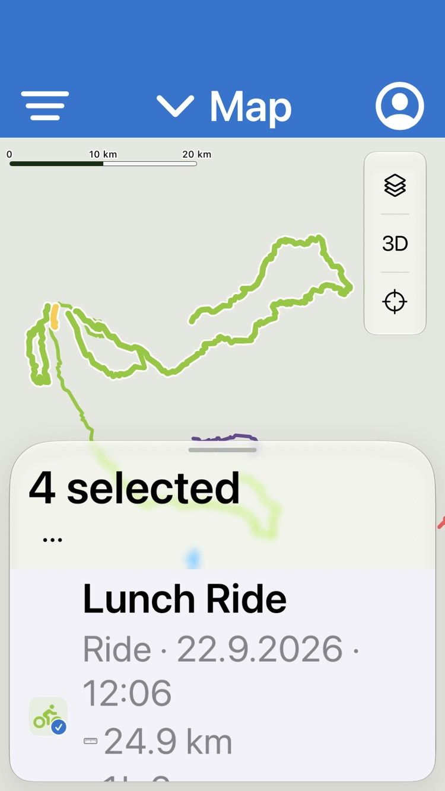
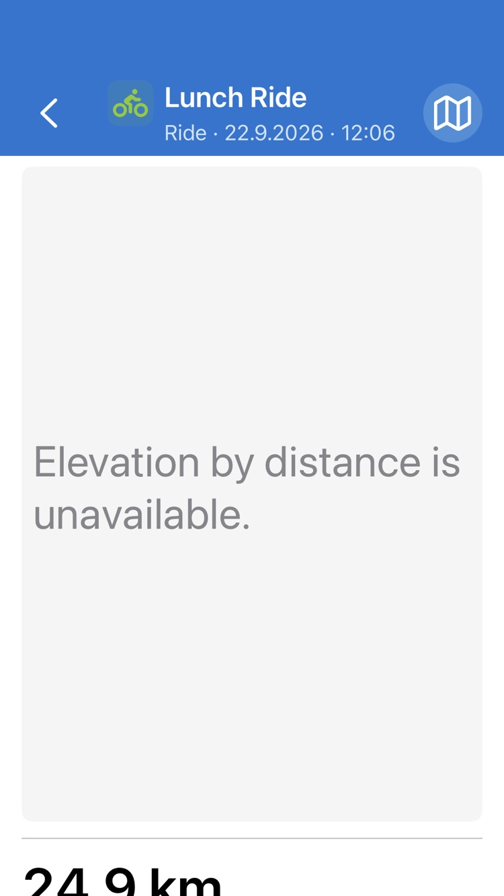
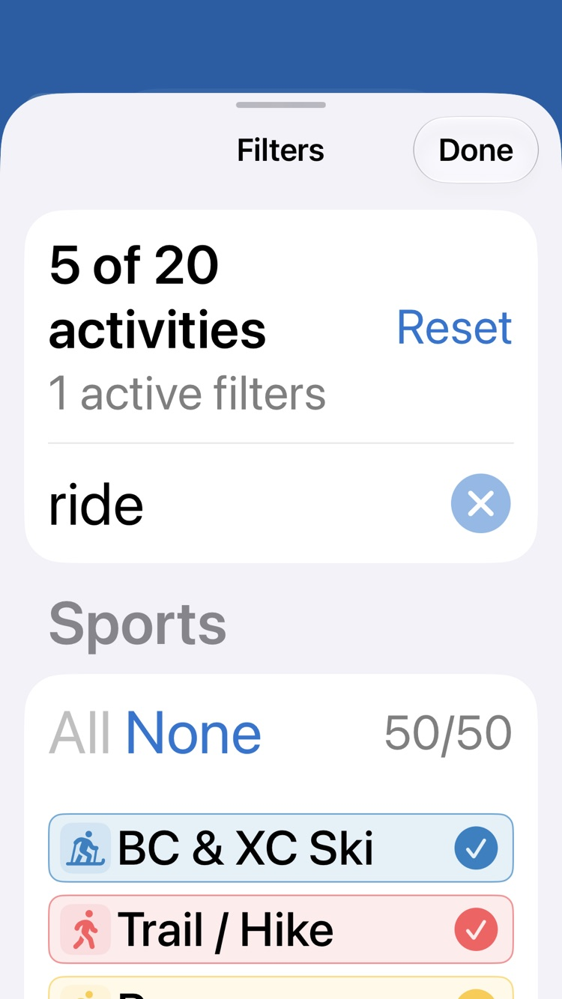
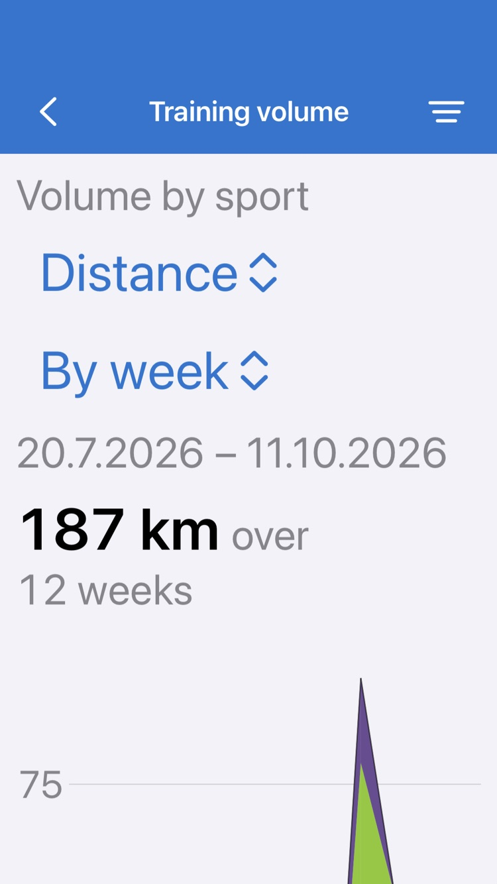

ActivityMap gallery · navigation-audit-large-text-20261011-734c23c4
iOS library: curated · basemap: offline · generated 2026-10-11 13:37
Viewport
small-large-text
size
Map · four selected routes

iOS
Web: no capture for this scenario
small-large-text · 375×667 · iOS Dynamic Type / web 150% text (different scaling systems)
List · activity detail

iOS
Web: no capture for this scenario
small-large-text · 375×667 · iOS Dynamic Type / web 150% text (different scaling systems)
Filters · search for ride

iOS
Web: no capture for this scenario
small-large-text · 375×667 · iOS Dynamic Type / web 150% text (different scaling systems)
Stats · expanded Training volume

iOS
Web: no capture for this scenario
small-large-text · 375×667 · iOS Dynamic Type / web 150% text (different scaling systems)